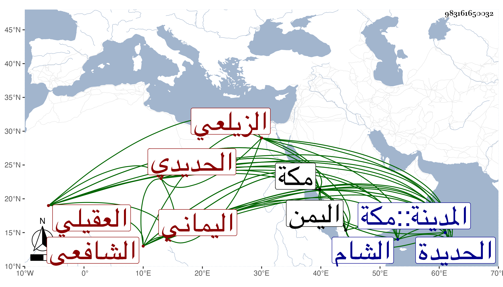

0902Sakhawi.DawLamic.ITO20230111-ara1.EIS1600.983161650032
Biography ID: 983161650032
818
إدريس بن علي بن إبراهيم بن محمد بن حسن بن إبراهيم بن علي بن حمديس ابن الحوات العقيلي فيما قيل اليماني الزيلعي الحديدي نسبة إلى الحديدة من اليمن بمهملات أولاها مضمومة والثانية مفتوحة ثم مثناة تحتانية مشددة الشافعي ، ولد بها في سنة تسع وتسعين وسبعمائة أو التي بعدها . شيخ صالح معتقد له جلالة وشهرة بناحيته روى عن القسم بن محمد بن الأهدل ولقيته بمكة في سنة إحدى وسبعين وسيما الخير عليه ظاهرة فسلمت عليه ودعا لي وله تردد كبير إلى الحرمين للحج والزيارة بل لا ينقطع كل عام عن المجيء وجاور بمكة في سنة ست وسبعين وله بها دار اشتراها مما أرسل به إليه أحد نواب الشام وهو خمسمائة دينار ومات في يوم الخميس ثامن ذي القعدة سنة اثنتين وثمانين رحمه الله ونفعنا به .
